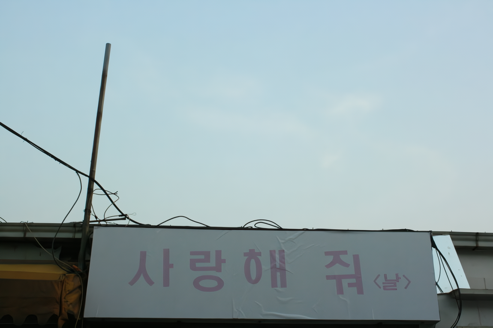
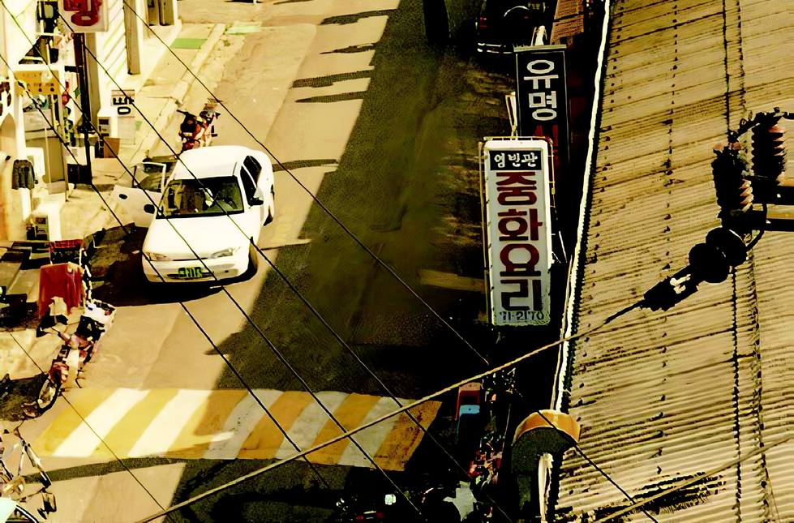
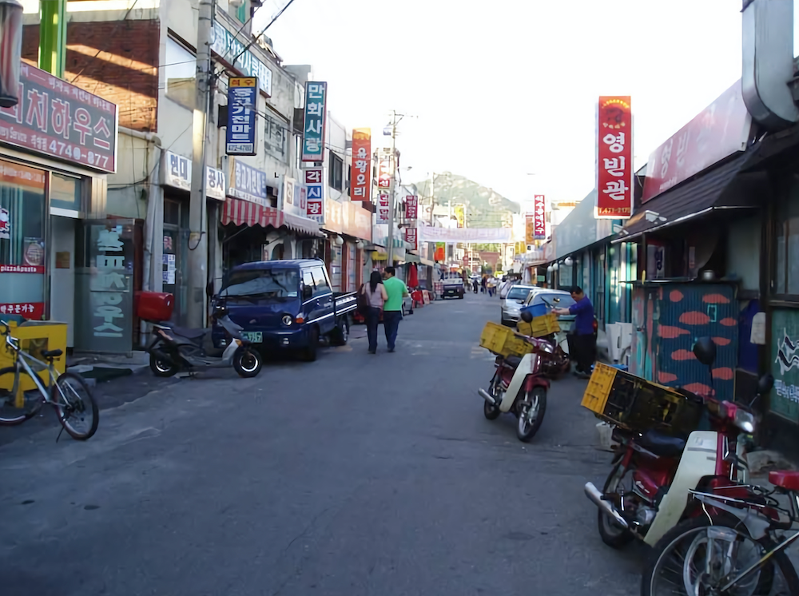
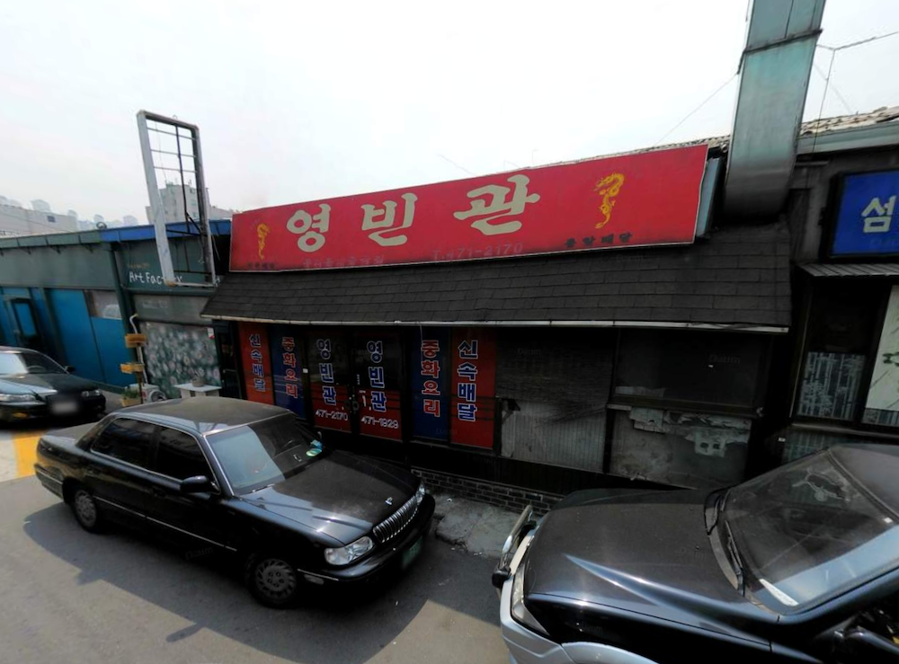

< 목적을 상실한 석수시장의 간판들 >

건물들 사이사이로 각자의 목적 의식이 다분한 간판들이 눈에 보인다.
그것들은 < 이곳은 어떠한 곳입니다. 그러니 당신의 목적에 맞는 곳이라면 어서 오십시오. >
라고 말하고 있다.
즉, 이곳이 어떤 곳인지 알려주는 목적을 지닌 것이다.

그런데 그것들 사이로 보이는 < 영빈관 > 간판
멀리서도 쉽게 눈에 띄게 붉은 글씨로 써져 있다.
그리고 이 간판 역시 < 여기는 중국집이니 짜장면을 드시고 싶다면 어서 와서 드세요. >
라고 말하고 있다.

그러나
정작 그곳에는 텅 빈 점포만이 남아 있을 뿐이다.

이제 < 영빈관 > 간판은 목적을 상실한 것이다.
이렇게 목적을 상실한 것들에 주목하려 한다.
그리고 이 간판들에게 새로운 목적을 부여하거나,
여전히 지니고 있는 상실된 목적을 삭제하는 작업을 하고자 한다.
< Signs in Seoksu Market Whose Meanings are Lost >
Signs with firm ideas of their purposes can be seen in between buildings. They all say: “This place is such and such. Welcome, if this place suits your purposes”. In other words, they are intended to inform the viewers what a place is about. A sign for “Young-Bin Gwan” in bright red letters that can be spotted even from afar. This sign also tells you that ”This is a Chinese Restaurant. If you want some Chinese food, please come in and enjoy”. However, the space represented by this sign is empty. The Young-Bin Gwan sign had lost its purpose. We want to concentrate on the signs that had lost their purposes. Moreover, I wish to create new meanings to the signs or erase the traces of lost purposes they still retain.